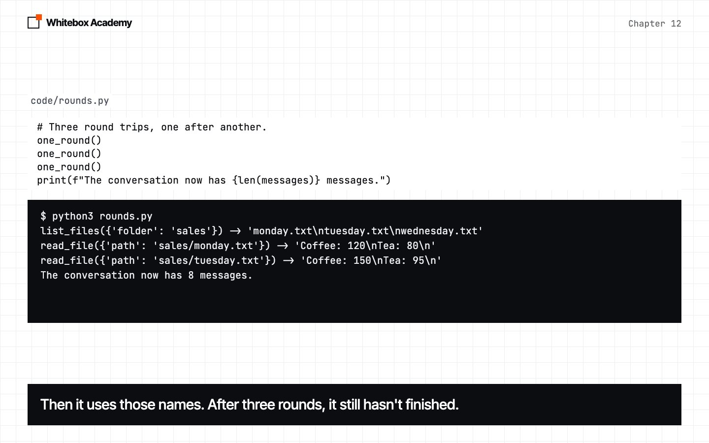
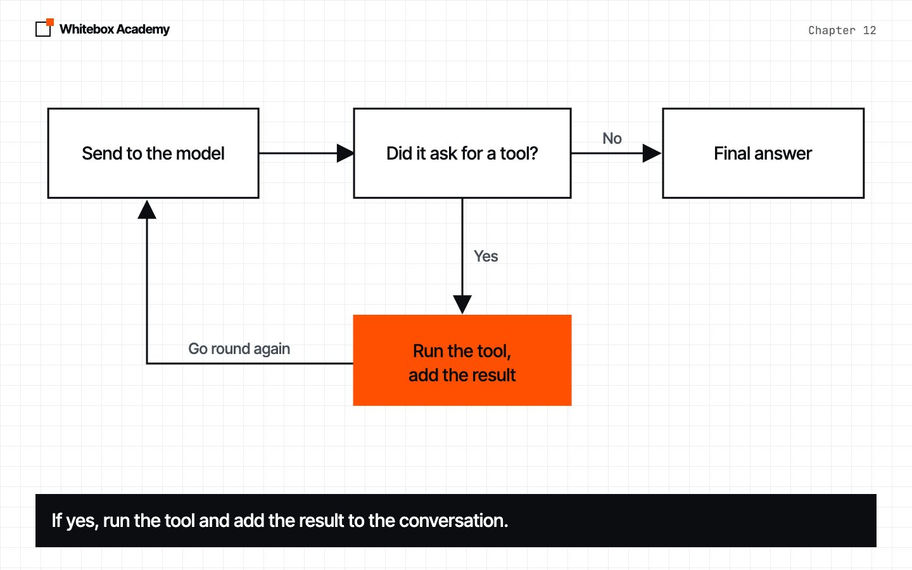
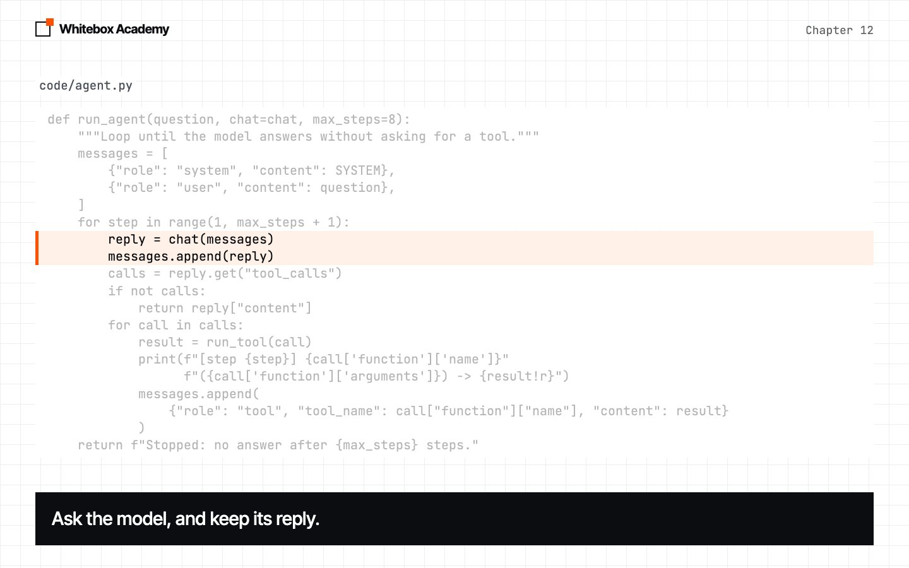
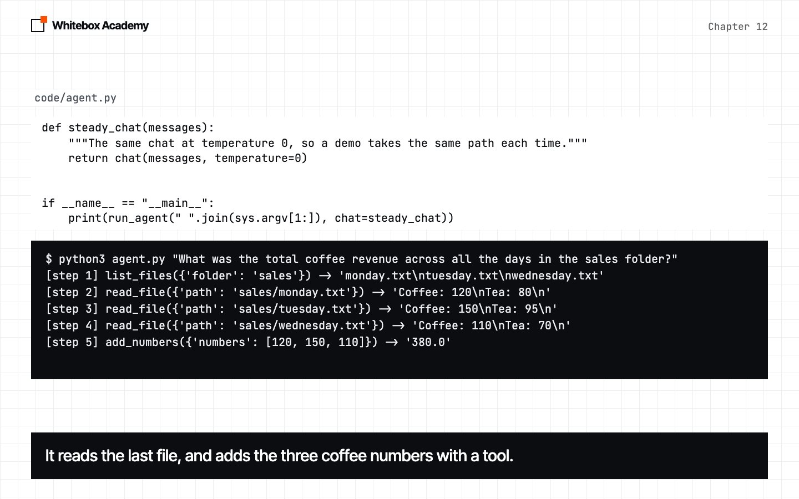
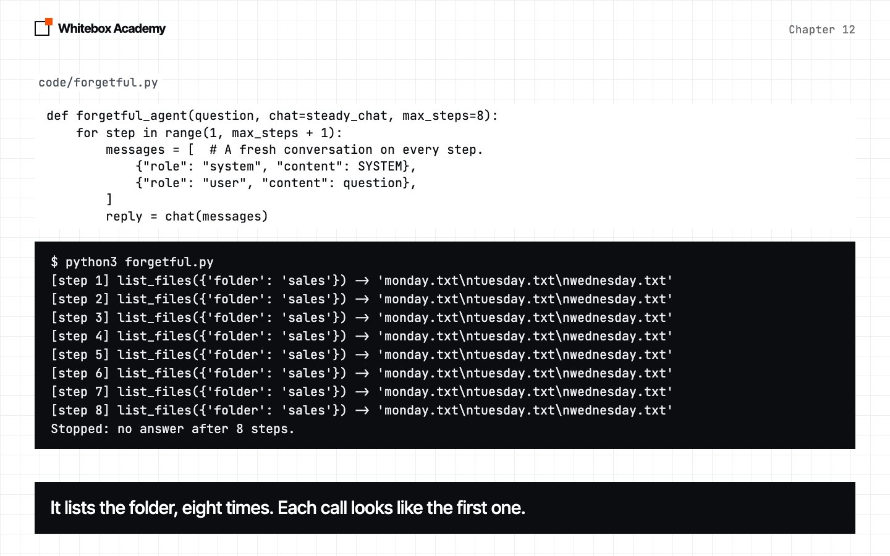

The agent loop
Put chapter 11’s round trip in a loop, and you have a working agent in about 60 lines of Python.
One round trip isn’t enough
In chapter 11, the model asked for a tool, your code ran it, and the model used the result. Then native.py stopped, because the sales question needs more than one tool, and the model still wanted another.
Start Ollama, activate the .venv from chapter 05, and work in chapters/12-agent-loop/code. tools.py is the same file as in chapter 11.
Run the round trip three times
Open rounds.py. one_round is the part of chapter 11’s round_trip that repeats, as a function. chat and run_tool are chapter 11’s, and steady_chat just calls chat with temperature=0.
def one_round():
"""Ask the model once. Run any tools it asks for, and keep everything in messages."""
reply = steady_chat(messages)
messages.append(reply)
calls = reply.get("tool_calls")
if not calls:
print("Answer:", reply["content"])
return
for call in calls:
result = run_tool(call)
print(f"{call['function']['name']}({call['function']['arguments']}) -> {result!r}")
messages.append(
{"role": "tool", "tool_name": call["function"]["name"], "content": result}
)
Predict: the script calls one_round three times, and the question needs the coffee total from three files. Will three rounds be enough?
$ python3 rounds.py
list_files({'folder': 'sales'}) -> 'monday.txt\ntuesday.txt\nwednesday.txt'
read_file({'path': 'sales/monday.txt'}) -> 'Coffee: 120\nTea: 80\n'
read_file({'path': 'sales/tuesday.txt'}) -> 'Coffee: 150\nTea: 95\n'
The conversation now has 8 messages.
This is real output from qwen2.5:7b. Three rounds aren’t enough, and there’s no answer yet. But nobody told the model the file names. It listed the folder, then used what it found, so each step depended on the one before.
So how many times should you call one_round? You can’t know. The model decides as it goes. You need to keep going until it stops asking for tools.
Put it in a loop
An agent is a model running in a loop with tools:
- Send the conversation to the model.
- If the model asks for tools, run them and add the results to the conversation.
- Go back to step 1.
- If the model doesn’t ask for a tool, its reply is the final answer.
Open agent.py. chat and run_tool are the same as in chapter 11. The new part is run_agent, and the inside of its loop is the round trip you just ran.
def run_agent(question, chat=chat, max_steps=8):
"""Loop until the model answers without asking for a tool."""
messages = [
{"role": "system", "content": SYSTEM},
{"role": "user", "content": question},
]
for step in range(1, max_steps + 1):
reply = chat(messages)
messages.append(reply)
calls = reply.get("tool_calls")
if not calls:
return reply["content"]
for call in calls:
result = run_tool(call)
print(f"[step {step}] {call['function']['name']}"
f"({call['function']['arguments']}) -> {result!r}")
messages.append(
{"role": "tool", "tool_name": call["function"]["name"], "content": result}
)
return f"Stopped: no answer after {max_steps} steps."
There are two ways out of the loop. If the reply has no tool calls, return hands back the answer. If the steps run out, the last line says so. chat is a parameter, so you can pass in a different one. At the bottom of the file, we pass in steady_chat, which keeps the demo repeatable. The exercises pass in a fake model.
$ python3 agent.py "What was the total coffee revenue across all the days in the sales folder?"
[step 1] list_files({'folder': 'sales'}) -> 'monday.txt\ntuesday.txt\nwednesday.txt'
[step 2] read_file({'path': 'sales/monday.txt'}) -> 'Coffee: 120\nTea: 80\n'
[step 3] read_file({'path': 'sales/tuesday.txt'}) -> 'Coffee: 150\nTea: 95\n'
[step 4] read_file({'path': 'sales/wednesday.txt'}) -> 'Coffee: 110\nTea: 70\n'
[step 5] add_numbers({'numbers': [120, 150, 110]}) -> '380.0'
The total coffee revenue across all the days in the sales folder is $380.
This is real output. It was the same in 5 of 5 runs here, but yours may take a different path. Nobody told the agent these steps. You’ve built an agent.
-
Run three rounds
Three round trips reach the second file, with no answer yet. The number of rounds isn’t something you can write down in advance.

-
Draw the loop
Ask the model. If it wants a tool, run it, add the result, and go round again. If it doesn’t, you have the answer.

-
Write it in Python
The loop in
run_agentis the round trip with a limit around it.
-
Run the agent
Five tool calls, then no more requests. The answer is 380.

Why you resend everything
Each call sends the whole conversation, and it gets longer every step. That looks wasteful, so let’s try leaving it out. forgetful.py is the same loop, with one change: it builds a fresh conversation on every step, and it never keeps the replies or the results.
for step in range(1, max_steps + 1):
messages = [ # A fresh conversation on every step.
{"role": "system", "content": SYSTEM},
{"role": "user", "content": question},
]
reply = chat(messages)
Predict: what will this agent do?
$ python3 forgetful.py
[step 1] list_files({'folder': 'sales'}) -> 'monday.txt\ntuesday.txt\nwednesday.txt'
[step 2] list_files({'folder': 'sales'}) -> 'monday.txt\ntuesday.txt\nwednesday.txt'
[step 3] list_files({'folder': 'sales'}) -> 'monday.txt\ntuesday.txt\nwednesday.txt'
[step 4] list_files({'folder': 'sales'}) -> 'monday.txt\ntuesday.txt\nwednesday.txt'
[step 5] list_files({'folder': 'sales'}) -> 'monday.txt\ntuesday.txt\nwednesday.txt'
[step 6] list_files({'folder': 'sales'}) -> 'monday.txt\ntuesday.txt\nwednesday.txt'
[step 7] list_files({'folder': 'sales'}) -> 'monday.txt\ntuesday.txt\nwednesday.txt'
[step 8] list_files({'folder': 'sales'}) -> 'monday.txt\ntuesday.txt\nwednesday.txt'
Stopped: no answer after 8 steps.
It listed the folder eight times. At temperature 0.7, it did exactly the same in 5 of 5 runs. Each call starts with no memory, so every step looks like the first step, and the model makes the first move again. The conversation is the agent’s only memory.
max_stepsis what stopped it. Without a limit, this agent would call tools forever.- The model’s own replies matter too. We also tried keeping the tool results but not the model’s replies. None of 5 runs reached an answer: 4 ran out of steps, and 1 returned an empty reply.

The same agent, run several times
The loop is simple, but the model inside it isn’t always reliable. So far, we’ve used temperature 0. five_runs.py is a provided measuring tool that runs your run_agent at temperature 0.7, five times with our SYSTEM prompt, then five times with a longer prompt that adds this:
Files are in the workspace. List a folder before reading from it. Do not ask the user for help. Keep using tools until you can answer.
Predict: how many of the five runs will reach 380 with each prompt? Will the longer one do better? It makes dozens of model calls, so it takes a while.
$ python3 five_runs.py
Original prompt
Run 1: 5 tool calls. Ends: 'all the days in the sales folder is 380.'
Run 2: 5 tool calls. Ends: 'all the days in the sales folder is 380.'
Run 3: 5 tool calls. Ends: ' Wednesday) in the sales folder is $380.'
Run 4: 5 tool calls. Ends: 'all the days in the sales folder is 380.'
Run 5: 5 tool calls. Ends: 'all the days in the sales folder is 380.'
Reached 380: 5/5
Longer prompt
Run 1: 5 tool calls. Ends: 'all the days in the sales folder is 380.'
Run 2: 6 tool calls. Ends: 'fee revenue across all the days is $380.'
Run 3: 5 tool calls. Ends: ' Wednesday) in the sales folder is $380.'
Run 4: 5 tool calls. Ends: 'Monday, Tuesday, and Wednesday) is $380.'
Run 5: 5 tool calls. Ends: 'll the days in the sales folder is $380.'
Reached 380: 5/5
Both prompts scored 5/5 in this run. But the same script, on the same question, gave 4/5 and 5/5 in the run before it. In that run, one attempt made six tool calls, then gave a wrong total starting with 42. It finished without an error, and it was still wrong. Your scores will vary too.
When we first built this chapter, we ran the same test on three models:
| Model | Download | Original prompt | Longer prompt |
|---|---|---|---|
llama3.1:8b | 4.9 GB | 2/5 | 3/5 |
qwen2.5:7b | 4.7 GB | 5/5 | 4/5 |
qwen2.5:14b | 9.0 GB | 5/5 | 3/5 |
Five runs is a small test, so treat these as a warning, not a ranking. The failures taught us more than the scores:
Guessing
llama3.1:8b tried to read a file called sales/total_coffee_revenue.txt, which doesn’t exist, then asked the user for help.
Running out of steps
One qwen2.5:7b run hit the limit and returned Stopped: no answer after 8 steps.
Fake tool calls
qwen2.5:14b once wrote a tool call as plain text. Our loop saw no real tool call, so it treated that text as the final answer.
Wrong answers
One qwen2.5:7b run made six tool calls and still gave the wrong total. Nothing in the loop can tell.
A bigger model or a longer prompt didn’t automatically do better. You’ll need a way to measure this properly, and you’ll build one in chapter 18.
These are real errors
| What happened | What you see | The fix |
|---|---|---|
| Ollama isn’t running | requests.exceptions.ConnectionError | Start Ollama |
chat returns text, as in chapter 06 | AttributeError: 'str' object has no attribute 'get' | Return the whole message, not just its content |
| The steps ran out | Stopped: no answer after 8 steps. | Read the step lines to see where it went round in circles |
Exercises
Open exercises.py and complete the five TODOs:
is_final: check whether a reply is a final answer.add_results: run the tool calls, and add their results to the conversation.run_agent: write the loop.run_agent: stop aftermax_steps.tools_used: list the tools the model asked for, so you can read an agent’s steps.
Then run python3 -m pytest test_exercises.py. These checks use a fake model, so Ollama doesn’t need to be running. You’ve finished when you see 5 passed.
Common mistakes
- Forgetting to add the model’s reply to
messages. One round trip can survive this, but the loop can’t. In our 5 runs without the replies, none reached an answer. - Writing the loop with no limit. A confused model can call tools forever.
- Checking only the final answer. A correct answer can hide a failed tool call, so read the steps as well.
- Judging an agent from one run. The same agent can pass, then fail.
Part 2 checkpoint
You’ve finished Part 2. Before moving on, build the trip expenses agent in checkpoints/part-2. It uses everything from chapters 09 to 12 and takes about 45 minutes. Run python3 -m pytest test_checkpoint.py until you see 5 passed, then try it with the real model.
What you opened
- An agent is a model in a loop with tools.
- The model chooses the next step, and your code runs it.
- You can’t know the number of steps in advance, so you loop until there are no tool requests.
- The conversation is the agent’s only memory, so you resend all of it.
- Always limit the number of steps.
The think, act, observe pattern was popularized by the 2022 paper ReAct. Chapter 26 compares it with other planning patterns.